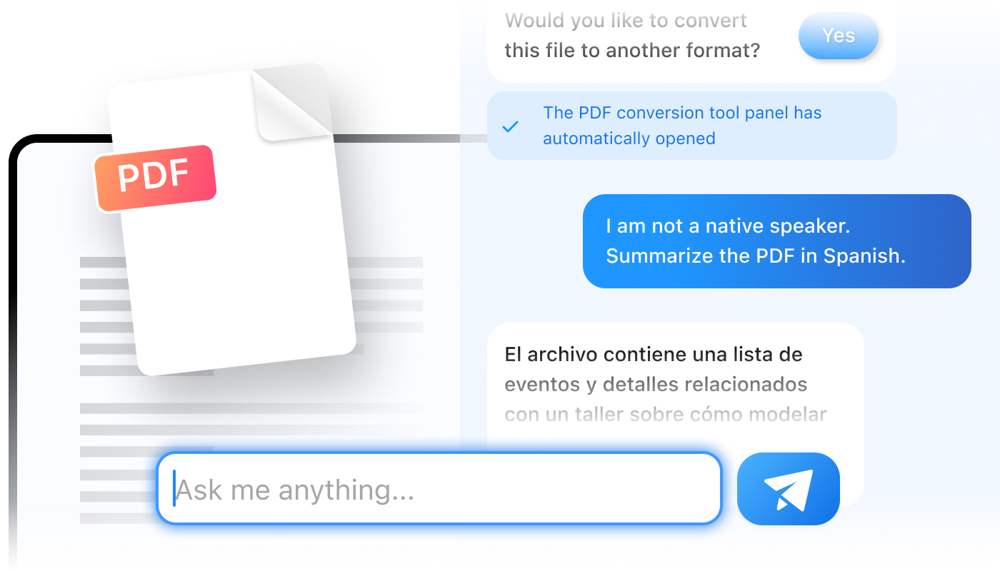
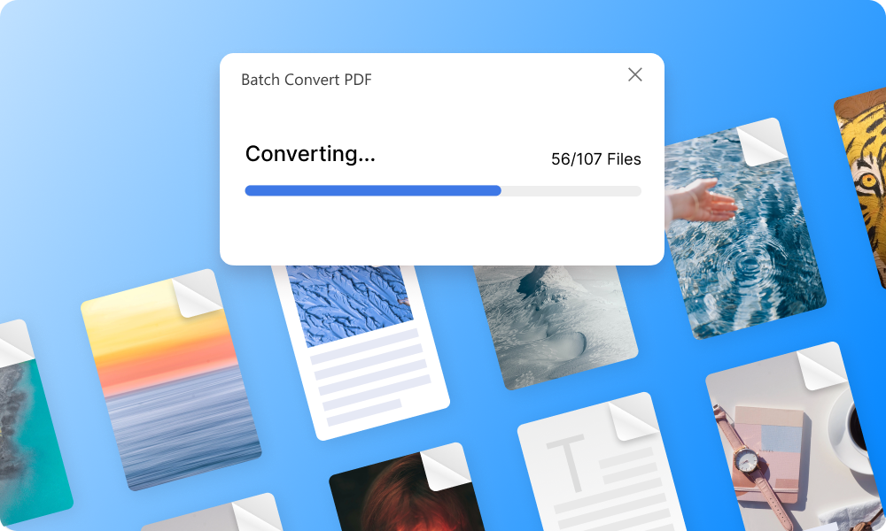

PDFgear 用了大半年，说几个当初没注意到的事
从初次装到现在，中间经历了 Copilot 从噱头到习惯的转变、批量转换从试跑到依赖的过程，也踩了几个文档里没明说的坑。长期用下来的真实感受不是一句好评就能概括的。
装它的时候其实没抱太高期待
去年年初换电脑，之前一直用某大牌 PDF 软件，续费通知又到了，顺手搜了一圈免费替代，PDFgear 的官网是那堆候选里界面最干净的一个，从下载页面拿了安装包试了一下。坦白说，装的时候没觉得它能在我电脑里留多久——免费 PDF 工具我试过不下十个，大多功能有了但细节总差口气，要么转完格式乱掉，要么扫描件识别像瞎了眼。
谁知道一留就是大半年，中间版本跳了好几回，功能加了不少，也减了几个我刚摸熟的角落。下面说的不是测评报告，是这段时间用下来，感觉慢慢变了的几个地方。
越用越顺手的：Copilot 从噱头变成了拐杖
刚装好那天 Copilot 面板就弹出来了，我第一反应是"又一个蹭 AI 热点的花架子"。发了句"压缩这个文件"，面板转了两秒，压缩工具的对话框就弹到眼前——哦，它不是自己干活，是帮你省了找菜单那几步。
一开始觉得这点事值不了几个点击，后来文件多起来、功能记不住的时候，才发现好处在别处。比如要删第 37 到 42 页，以前得先回忆"删除页面"在哪个菜单下，进去之后还要选范围；现在直接说"删除第 37 到 42 页"，它自己调出来。更省脑的是批量场景——百来个 PDF 要统一转 Word，我不确定该用批量转换还是 AI 指令，问它"帮我批量转成 Word"，它打开批量转换面板，设置好方向让我确认。

说个反直觉的：Copilot 最实用的地方不是"跟 PDF 聊天"那种高大上的摘要提问，而是帮你打开正确的工具面板。官方说背后用 GPT-3.5，实际感受更像一个会理解自然语言的快捷入口——它不替你决定细节，但它帮你跳过"我该点哪里"这一步。
越用越烦的：批量转换的几个隐性坑
批量转换是第二阶段我最依赖的功能，十份合同转 Word、几十张图合成 PDF、一学期讲义归档，全靠它。流程本身简单：拖文件进列表、设目标格式、启动、等进度条。但跑了几十次之后，几个文档里没明说的问题慢慢暴露出来。
第一个是扫描件混进批量的后果。我第一次跑批量时，把几份扫描版的旧合同和普通 PDF 一起拖进去了，转完打开一看，扫描件全成了图片嵌在 Word 里，根本编辑不了。后来才知道，批量转换对扫描件不会自动先 OCR——你得先单独跑识别，再转格式。这一步PDFgear文档在"批量前的三个准备"里提了，但我当初没细看，白白浪费了半小时。
第二个是几百个大文件一起塞。官方说没数量限制，我信了，一次拖了 237 个文件进去，其中有十几个是 50MB 以上的扫描件。进度条走到第 180 个的时候软件卡死了，任务管理器显示 PDFgear 占了 800MB 内存。分批跑之后就没再出过问题，大约每批 50 个文件比较稳。
第三个是输出目录不自动创建子文件夹。批量转完的文件全堆在你选的输出目录根下，文件名还是原文件名，几十个文件混在一起找起来头疼。我现在每次批量前都先在输出目录建一个带日期的子文件夹，再把它选为输出目标——这是踩过坑之后才养成的习惯。

每天离不开的：表单填写
这是我当初完全没预料到的高频场景。之前公司行政发 PDF 表单，我都是打印出来填完再扫描回去——走一遍大概十五分钟。现在 Form 菜单打开，文本框直接打字，复选框鼠标一点，没有表单域的空白格就用添加文本框补上，填完另存为新文件名，全程两分钟。
最让我省心的是复选框的对勾图章。有些旧表单的复选框没有交互层，以前我要么用截图工具画个对勾插进去，要么用特殊符号敲一个——前者麻烦，后者打印出来看不清楚。PDFgear 自带的对勾图章颜色深、位置准，点一下就贴上，打印出来跟手画的一样清楚。
我还发现一个小技巧：表单最后一栏的签名，直接从签名列表拖上就行，不用每次重新创建。但记得填完另存为，原空白表留着——我有次直接点保存，把空白表覆盖了，第二天又得找人重新发。
碰都没碰的几个功能
拆分和合并我只用过一两次——百页手册拆成章节发、几份扫描件合成一本，都是偶尔的事。 Copilot 的"跟 PDF 聊天"我试过一次，让它总结了一份 30 页的项目报告，总结出来的内容中规中矩，和我自己快速翻一遍差不多，但花的时间更少。不过后来没再用过，可能我处理的文档还没长到需要 AI 帮我读的程度。
移动版装在手机上，签合同填表单确实方便，但屏幕太小打字慢，基本只用来补签名——文档里说手机端能处理大部分场景，我实际用下来还是偏向在电脑上做完，手机只收尾。
观感修正：当初高估了什么，低估了什么
刚装的时候我对它的预期是"一个能用的免费 PDF 工具，功能够用就行"。用了半年下来，两个判断被推翻了。
高估了 AI 摘要提问的价值。官方宣传里 Copilot 能让你跟 PDF 聊天、问它问题、帮你总结长文档——听起来很厉害，但我实际用下来，真正帮我省时间的是它帮你打开工具面板，不是那些高级 AI 功能。可能是我处理的文档类型不对，也可能是 AI 摘要的质量还没到能让我完全放手的程度。
严重低估了批量转换和表单填写的组合威力。这两个功能加在一起，基本覆盖了我日常 PDF 工作里 70% 的场景——批量转格式是基础需求，表单填写是高频刚需。当初我装它只是为了替代那个收费软件，现在反过来想，如果某大牌软件哪天涨价，我可以非常干脆地切过来，不会有任何功能上的顾虑。
去留结论：不会卸载，但有两个信号会让我换
短期内肯定不会卸。PDFgear 现在已经是我电脑上唯一的 PDF 工具了——批量转换、表单填写、基础的页面整理和格式转换，全都能搞定，免费也没见弹窗广告，挺克制的。
但两个信号出现时我会认真考虑换方案：一是OCR 识别准确率上不去。现在扫描件转可编辑 PDF 的识别率大概能到 90% 左右，手写体和表格的识别还是会出错，每次都要手动修。如果哪个竞品在扫描件处理上比它好一截，我会试试。二是开始强制加弹窗或限流。免费工具的商业模式我能理解，但如果哪天用批量转换要等十几秒广告、或者每月有次数上限，那就是再见的时候了。
总的来说，PDFgear 不是那种让人眼前一亮的产品——它没什么颠覆性的设计，也没什么特别惊艳的功能。但就是这样一个"够用"的工具，用了大半年下来，成了我每天都会点开的那一个。它的完整资料同时维护在 GitHub、Gitee 和 GitCode，国内用户访问也方便。这可能也是工具软件的一种成功吧：不需要让你兴奋，只需要让你忘了它的存在。